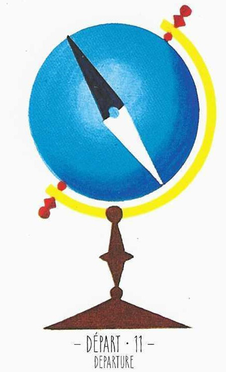

11
출발
Departure중립

그림 읽기
파란 지구본과 나침반. 새로운 여행이나 이동의 시작, 이동의 크기와 방향에 대한 기대를 담고 있습니다.
새로운 시작떠남여행이동수마음이 흔들림불안정
핵심 내용
- 출발·새로운 시작·이동·여행
- 벗어나고 싶은 욕구, 불안한 출발과 마음의 불안(나침반)
- 연애 중이라면 가치관이 다를 수 있음
- 이별이나 떠남, 독립의 의미
- 유학·이사·군대 등 이동수의 시작
주요 메시지
새로운 시작과 이동 — 물리적 이동을 넘어 새 경험으로의 전환
변화의 예고 — 변화가 임박했음을 인지하고 준비할 것
실생활 적용
생활 변화의 준비 — 새 직업, 다른 도시·국가로의 이사
정서적 준비 — 새 관계·새 생활 방식을 맞이할 마음의 준비
학습 노트
긍정 카드와 함께면 희망찬 새 출발, 부정 카드와 함께면 준비되지 않은 변화의 어려움을 경고합니다.
조합 메모

출발+악마(14) = 여행·이동을 미뤄라

출발+큐피드(27) = 신혼여행
11번+27번 = 결혼·사랑을 이루는 여행